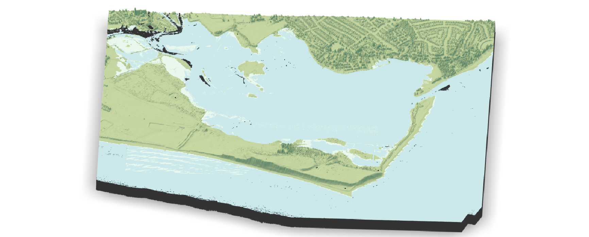
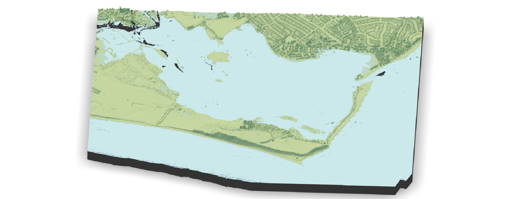
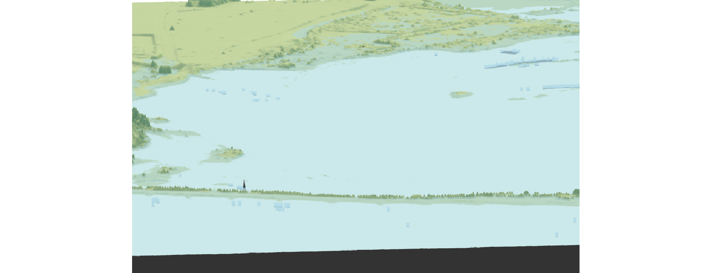

We hear about sea level rise in the media, but its hard to put it into a real perspective
I used the Rayshader package in R together with LiDAR data to sink a section of the south coast of England and evaluate the extent of the flooding
Read more
View code


